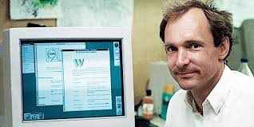

Starting in the Pre-Web era, the first step in this evolution would be credited to software engineer Tim Berners-Lee while working for CERN’s particle physics laboratory. With a degree in physics from Queen’s College and experience at notable companies such as Plessey Telecommunications, D.G. Nash Ltd, and Image Computer Systems Ltd; spending his early career working on commercial technology and typesetting software. In his biography on w3.org, it states, “Whilst there, he wrote for his own private use his first program for storing information including using random associations”. This program he dubbed “Enquire” would serve as the foundation for a larger global hypertext project, and in 1990 he would release the “WorldWideWeb” program; the first Web Browser. According to geeksforgeeks.org, it states, “It was indeed an extraordinary development as it was the only web browser present at the time which provided a user-friendly interface”. The user-interface or UI is the cornerstone of making the internet more accessible, furthering education and knowledge of mankind.
From a user perspective, we use browsers to do things like check our email, shop online, or for personal entertainment. It is very straightforward for anyone who has used a computer. However, there are complex processes occurring behind the scenes to present to you the information you are looking for as you browse the web. The purpose of a browser is to translate the hypertext markup language (HTML) by using the hypertext transfer protocol (HTTP). This displays text, images, and videos in a way that is palatable for the user. In the article What is a Web Browser and How Does It Work? Author John Gormally states, “You’re actually calling up a list of requests to get content from various resource directories or servers on which the content for that page is stored”. I like to think of the browser as an assembly line for a car. Firstly, when you type in a uniform resource locator (URL) you are instructing the browser to fetch the IP address associated with that name and the specified resources within it. Each section and subsection of the URL is important for locating the correct information, like specifying what kind of parts you want for your car. Secondly, the browser sends a request to the server(s), and the server(s) returns the request with the content; typically, code such as HTML, CSS, or JavaScript. The browser does this by using the hypertext transfer protocol HTTP or its secured counterpart HTTPS. This acts like the employees, decoding the list of parts and collecting them for assembly. Next, the code is parsed and is organized into a tree structure, as determined in the code, in a DOM or Document Object Model. The model is then rendered by the browser’s engine to, and the pieces are assembled to their proper place. This is like the frame of the car and assembling the doors, wheels, engine etc. Then the JavaScript is executed to enable all the interactive elements of the page. This is akin to wiring the car since at this stage we have all the structure but no functionality yet. Finally, the final touches are added to the pages visual, the page composites, and the final complete page is returned to the user. This would be like the final tune up before you receive your new car.
The introduction of this technology meant new developments and more importantly: competition. During the 90’s came the “Browser Wars” where an arms race between Netscape and Microsoft emerged to further push what browsers could do. Netscape Navigator’s claim to fame was the creation and introduction of JavaScript. According to firefox.com, “This gave websites powerful computing capabilities they never had before”. Founded by Tim Berners-Lee and Marc Andreessen in 1994, the company would produce the world’s first mass-market browser. This was beneficial for maintaining their control of the market, with “90% market share” at the initial launch. However, the launch of Microsoft’s Internet Explorer only a year later would prove to be fierce competition for Netscape. From 1995 to 1997 there would be a massive paradigm shift towards Microsoft. In his article, “History of the Internet – the Browser Wars”, author Ian Peter states, “In October 1997, Internet Explorer 4.0 was released… It was faster and it adopted the W3C’s published specifications more faithfully then Netscape Navigator 4.0”. One of the key flaws in Netscape’s business philosophy was not including the server software with their browser, making it less accessible than their competitors. This was the turning point that would allow Microsoft to take advantage of Netscape’s flawed business model and further boost their own monopoly on the operating system market. By the end of 1998, Netscape was sold to America Online for $4.2 billion marking the end of Netscape. By the 2000s, Microsoft would cement themselves as the dominant force in computing and software technology, ending the browser wars and evolving the technology to what we have today.